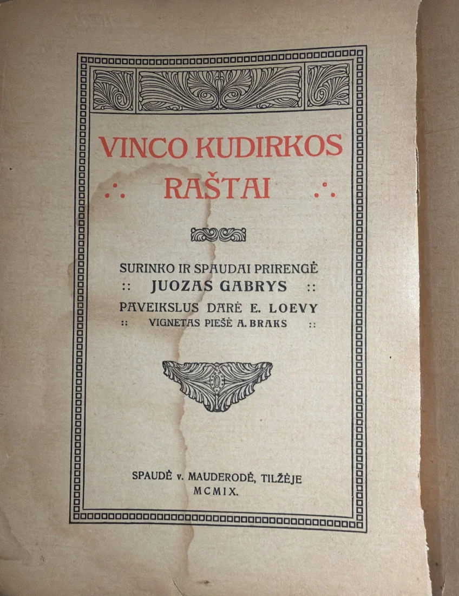
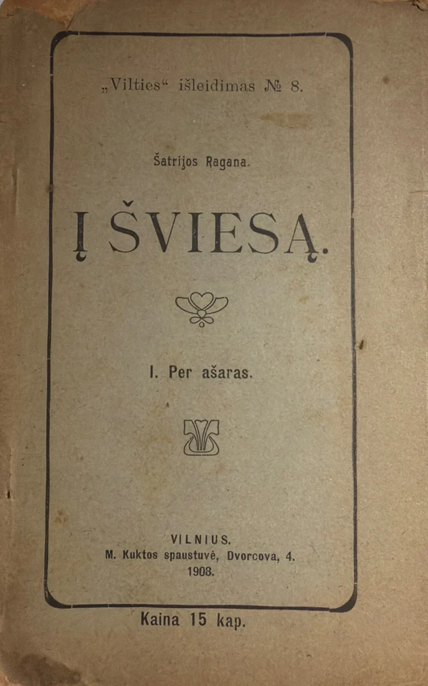

Žiburys means a light.
To ensure that Lithuanian knowledge, memory, faith, language, institutions, and archives continue to illuminate future generations.
Žiburio Foundation is a Michigan nonprofit, formed in 2026 as the permanent steward of Lithuanian diaspora cultural memory.





A new institution for new times.
Žiburys means what it says: a light. The Foundation's job is to keep that light burning through the transformation our generation happens to be living through.
Each generation of the Lithuanian diaspora built the institutions its moment required: churches, schools, camps, funds, a press. The Foundation is the institution for this one, in which more and more of what people know, and even their cultural memory, will reach them through artificial intelligence.
It preserves, gathers, teaches and forms. It measures its success by youth, memory, participation, preservation and education. Its existence and purposes do not depend on any particular school, parish or host institution, and they outlast changes in them.
We prepare our memory and our young people for the world they are inheriting.
What it was formed to do.
From Article II of the Foundation's Articles of Incorporation, filed in Michigan on August 18, 2026.
Steward
To serve as the permanent steward of Lithuanian diaspora cultural memory: acquiring, preserving, documenting, digitizing, and providing governed access to archival materials, publications, records, oral histories, and other cultural artifacts of the Lithuanian diaspora and its communities.
Educate and form
To educate and form young people and the public in archival stewardship, cultural literacy, historical research, the Lithuanian language, and the responsible use of emerging technologies in the service of cultural memory.
Keep it true
To document and preserve the provenance, context, and authenticity of cultural materials, and to make inherited knowledge visible, trustworthy, intelligible, and generative for future generations.
Create
To support the creation of new cultural, educational, and scholarly works from authentic historical sources.
Cooperate
To cooperate with schools, parishes, museums, libraries, archives, scholarly institutions, and community organizations in the United States, Lithuania, and worldwide, including assisting other communities and parishes in the stewardship of their own cultural materials.
New in the archive.
Catalogued October 14, 2026, in the Žiburio Archive, metro Detroit.
Vinco Kudirkos Raštai, I
Tilžė (Tilsit), 1909. The first collected edition of Vincas Kudirka.
Vinco Kudirkos Raštai, I
The title page: compiled by Juozas Gabrys, illustrations by E. Loevy.
Lietuvos Kanklės
Tilžė (Tilsit), 1895. Printed in Prussia during the forty-year ban on Lithuanian in the Latin alphabet.
Į Šviesą. I. Per ašaras
Šatrijos Ragana. Vilnius, 1908, in the first years after the ban was lifted.
How the work is done.
Every source is digitized, read by AI, checked by people, and linked to the page it came from.
Žiburio Archive
The sources. 326 published records from 513 catalogued items.archyvas.ziburioltmokykla.org ↗
Lietuva.AI
The connected record, in beta, with every source cited and visible. Operated independently by Žiburio Foundation.lietuva.ai ↗
Save Our Lithuanian Parishes
The record applied: a public registry of 155 Lithuanian institutions in the United States.saveourlithuanianparishes.org ↗
Skaitmeniniai Knygnešiai
Digital Book Carriers. Seven high-school interns scan and catalogue the archive's books, build their Lithuanian, and learn the responsible use of AI by working directly with primary sources.
An apprenticeship in cultural inheritance.
Learn to steward. Learn to notice. Make something from what you found. Next
Perhaps preservation becomes inheritance when someone new begins asking questions of it.
The human being remains responsible for memory.
AI helps us see more within it.
Žiburio Foundation cannot become an AI company.
The community holds its own memory, governs access to it, builds its own intelligence from it, and does not lose it.
Representation is not inheritance.
A corpus is not a culture.
Support the work.
Žiburio Foundation is a Michigan nonprofit. Ways to support the work will be listed here. Write to Vilija Jurgutis, Executive Director.